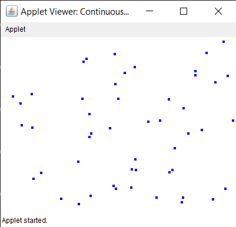

20. Java Program to Validate the TextField for only entering email id using KeyAdapter
import java.applet.Applet;
import java.awt.*;
import java.util.Random;
import java.util.Timer;
import java.util.TimerTask;
public class ContinuousDotsApplet extends Applet {
private Random random;
private int dotCount = 50; // Number of dots to display
private int[][] dotPositions; // Array to store dot positions
public void init() {
// Initialize random generator and dot positions array
random = new Random();
dotPositions = new int[dotCount][2];
// Set a timer to update dot positions and repaint periodically
Timer timer = new Timer();
timer.schedule(new TimerTask() {
public void run() {
updateDots();
repaint();
}
}, 0, 200); // Update every 200 milliseconds (5 times per second)
}
private void updateDots() {
// Update positions of each dot to random coordinates within the applet
for (int i = 0; i < dotCount; i++) {
dotPositions[i][0] = random.nextInt(getWidth()); // X position
dotPositions[i][1] = random.nextInt(getHeight()); // Y position
}
}
public void paint(Graphics g) {
// Draw each dot as a small filled circle at its random position
g.setColor(Color.BLUE);
for (int i = 0; i < dotCount; i++) {
int x = dotPositions[i][0];
int y = dotPositions[i][1];
g.fillOval(x, y, 5, 5); // Draw dot with 5x5 size
}
}
}
OUTPUT
